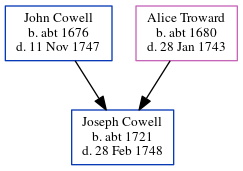

Joseph Cowell c1721 - 1748
[ Home ] | [ Calendar ] | [ Surnames Index ] | [ Census Index ] | [ Family History ]The child of John Cowell (a yeoman) and Alice Troward, Joseph Cowell, the six times great-uncle of Nigel Horne, was born c. 1721 and baptized in Margate, Kent, England on Mar 30, 1722.
He died on Feb 28, 17481 and was buried at St John the Baptist Church in Margate on Mar 4, 17482.
Parents
- John was born c. 1676
- Alice was born c. 1680
Citations
- Other
- Find A Grave http://www.findagrave.com
Media
John Cowell - Alice Troward - headstone

England, Births & Baptisms 1538-1975 Transcription - R_885512778
England, Births & Baptisms 1538-1975 Transcription - R_885862200
England, Births & Baptisms 1538-1975 Transcription - R_883175149
Canterbury Baptisms Transcription - GBPRS-CANT-B-96204025
Canterbury Baptisms Transcription - GBPRS-CANT-B-96739851
Family Tree
Generated by ged2site. Last updated on Jun 11, 2024